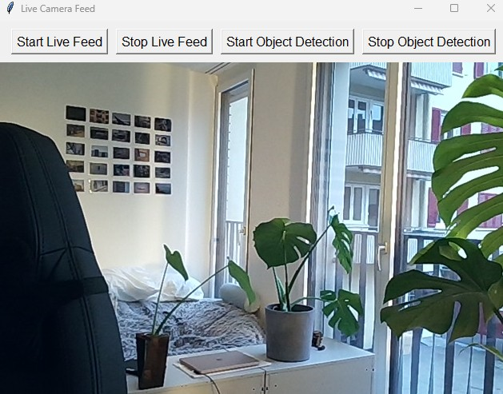
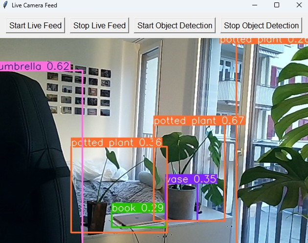

Project 3: Real-time object detection with YOLOv8
RESULT
- The frontend successfully created a user interface with all the required functions.
- The live video feed operated smoothly and consistently.
- Object detection performed effectively, though its accuracy varied based on the type of object, as well as the angle and distance from which the object was filmed.
Solution Demonstration
The live video feed can be started by clicking the "Start Live Feed" button:
Once the user is ready, object detection can be enabled by clicking the "Start Object Detection" button:
Conclusion and Outlook
In summary, this project highlights the simplicity and effectiveness of combining a Tkinter-based frontend with a YOLOv8 backend to perform real-time object detection on video feeds. This foundational implementation provides a solid starting point and demonstrates the feasibility of integrating these technologies seamlessly. Building on this base, several enhancements and expansions are possible to improve its functionality and usability:
- Improved User Experience: Incorporating a more polished and intuitive design for better user interaction.
- Advanced Features: Allowing users to upload pre-recorded videos or select specific input sources.
- Scalability and Performance: Supporting additional detection backends to make the application flexible and modular.